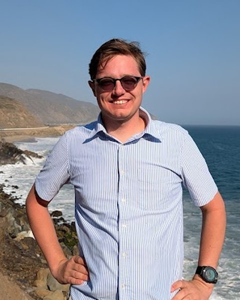
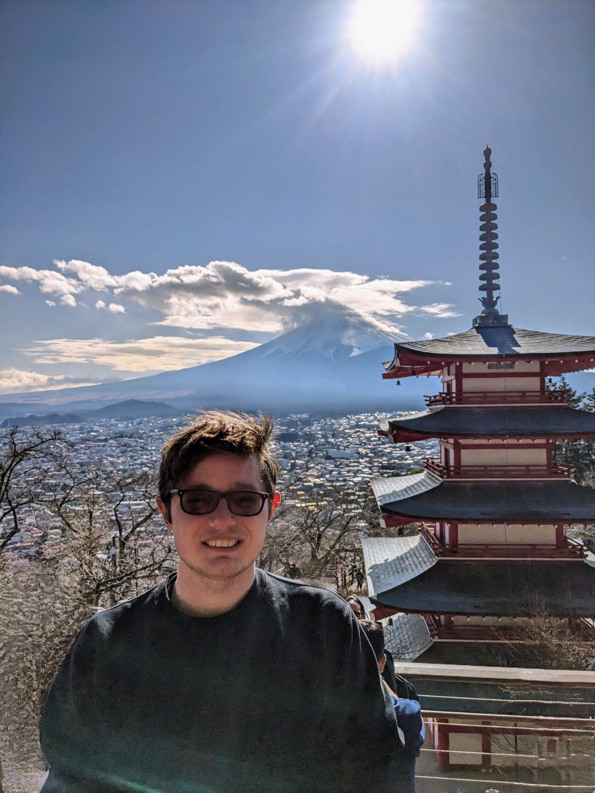
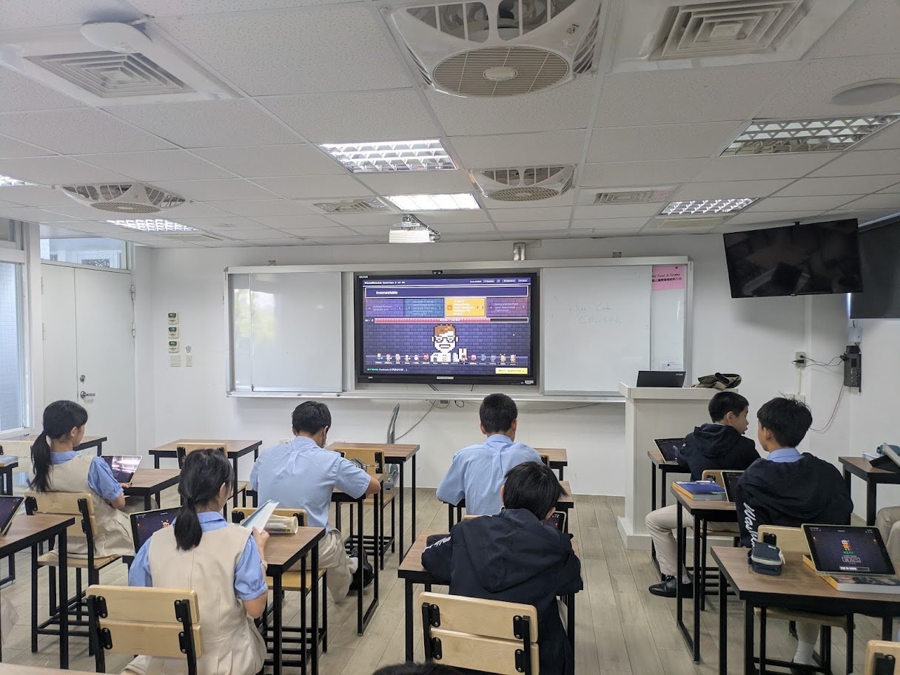
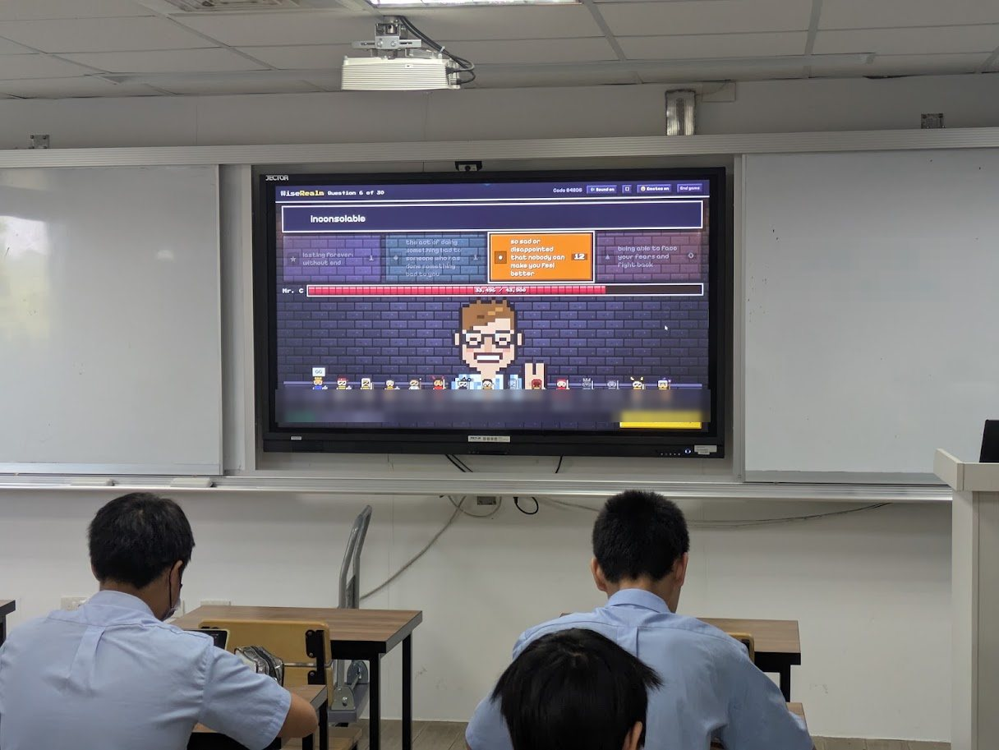
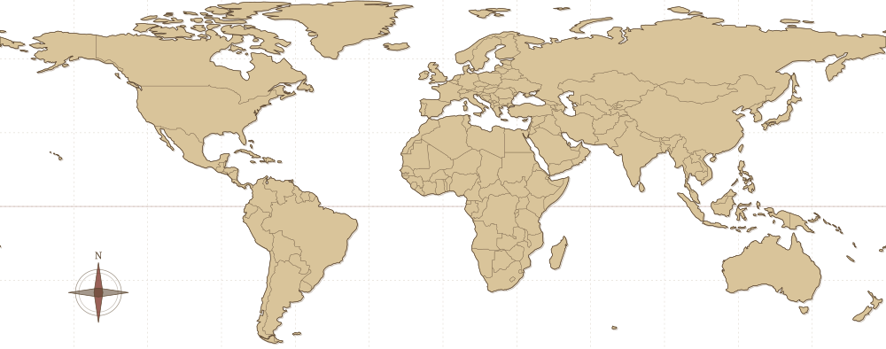

The Personal Website of
Sean Cameron
金俊山
❦
I teach high school classes in English and Mandarin in Taiwan, and I design curriculum based on second-language acquisition research.
US Passport, Taiwan-based (spouse ARC)
At a Glance
❦
10years teaching & tutoring
3endorsements
6languages
- Seeking
- Secondary Social Studies, EAL / ESOL, or Chinese (Mandarin)
- Licensure
- Washington, DC teaching license (complete Jan 2027)
- Safeguarding
- Child Protection for International Schools (EduCare, November 2026, 5 CPD credits)
- Now
- Bilingual Experimental Program Instructor, Washington High School, Taichung (full time, 2024 – present)
- Experience
- 10 years of teaching & tutoring since 2016
- Grade levels
- Grades 7–12 (junior high & high school)
- Education
- M.A. Chinese, Brigham Young University (2024)
B.A. Linguistics & Chinese, BYU (2023) - Languages
- English (native) · Mandarin (C1) · German (B2) · Japanese, Indonesian & Cantonese (A2)
- Highlights
- Mandarin curriculum prototypes published as official materials by Taiwan’s National Academy for Educational Research · Model UN coach (Yale MUN Taipei) · presented research at five academic conferences (2021–2022)
- Ed tech
- I like finding ways technology can help students learn. I built WiseRealm, a game platform, for my own classes, and I design digital lessons with tools like Canvas, Google Workspace and AI.
- Beyond class
- Model UN · international school exchanges · Rescue Diver (73 dives) · photography
- Work status
- US passport · Taiwan spouse ARC, so no work permit or visa sponsorship is needed · based in Taichung
- Available
- 1 August 2027
- Materials
- Browse my teaching materials →
- On request
- References · teaching samples (lesson video, unit plans)
Chapter I
Teaching Philosophy
❦

擇其善者而從之，
其不善者而改之。
"When I walk along with two others, they may serve me as my teachers. I will select their good qualities and follow them, their bad qualities and avoid them."
Confucian Analects 7.22
According to Confucius, among any three people, one can always find a teacher. This is true for all the classrooms I have been in, as a student, a tutor, and a teacher. Learning happens when one feels secure, acknowledged, and connected to others, which is why I identify myself mostly with the affective-humanistic perspective. Emotions and connection are not secondary to the process of learning but at its core.
In my classroom, this translates into:
- Community first. I create a classroom where students learn from each other regardless of language and culture, and not only from me.
- Language as a tool. Being bilingual myself, I purposefully use English and Mandarin to make sure that language becomes a bridge to learning and not a barrier, using my knowledge of second-language acquisition.
- Relevant questions. Utilizing local issues, global news, and the SDGs, I enable students to research, debate, and discuss issues that go beyond the textbook.
- Connections outside of the classroom. Exchange programs with schools around the globe allow students to make friends and broaden their own perspectives.
- Curiosity over completion. I would rather my students leave class asking more questions than simply completing their worksheets, always keeping the bigger picture in mind.
I think one of the major dangers to learning is complacency: assuming there is nothing more to learn. I would like my students to come out of my class as curious, lifelong learners.
Chapter II
Work Experience
❦
-
Aug 2024 – Present
Bilingual Experimental Program Instructor
Washington High School 華盛頓高級中學 · Taichung, Taiwan- Design curriculum and teach high school courses in English and Mandarin: Business, International View (SDGs), Model UN, Music, and National Defense.
- Teach ESL and German to junior high and high school students.
- Coordinate online exchanges with high schools in Taiwan, Japan, Malaysia, and the USA.
- Translate and proofread International View, a weekly global news curriculum published for schools across the region.
-
Aug – Dec 2023
Mandarin Curriculum Design Intern
National Academy for Educational Research 國家教育研究院 · Taipei- Wrote and designed a digital curriculum for Mandarin learners for use by Taiwan's Ministry of Education.
- Consulted on the Academy's language corpus tools, and translated and proofread its English documentation.
-
2019 – 2024
Language Tutor: English, Mandarin & German
Private tutoring throughout university- Tutored learners of English, Mandarin, and German consistently while studying at university.
- English: exam preparation for IELTS, TOEFL, TOEIC, and GEPT, plus conversational and business English.
-
Mar 2020 – Jun 2023
Research & Teaching Assistant
Brigham Young University · Provo, Utah- Neurolinguistics Lab: conducted EEG sessions under Dr. Jeffrey Green and trained new research assistants; TA for LING 580R: Neurolinguistics.
- Economics: collected and analyzed historical data for Dr. Joseph Price; Kaizen team leader.
- Linguistics/Arabic: wrote articles on second-language acquisition research for a general audience as part of "Project Perseverance".
-
Feb 2021 – Jun 2022
Language Content Specialist
Embark · Provo, Utah- Managed content and worked with native-speaking reviewers in the Embark app for Japanese, Korean, Mandarin, Cantonese, Vietnamese, Thai, and Persian.
- Developed Mandarin Canvas courses grounded in second-language acquisition research.
-
Jan – Apr 2020
Translation Guide Project Manager (Intern)
Provo, Utah- Wrote translation guides as part of a team and delivered on schedule to the project sponsor.
-
Jul 2017 – Jul 2019
ESL Teacher & Volunteer Team Leader
Community volunteer service · Los Angeles- Taught ESL in a community English program, primarily serving the Chinese-speaking community of Los Angeles County.
- Supervised and trained groups of 15–18 volunteers in their service duties.
-
2016
Volunteer Tutor: German & English
Sky View High School · Smithfield, Utah
Notes from the Field
❦
A few of these jobs have more to them than a list of duties, so I wrote a little more about them.
Aug 2024 – Present
Washington High School
❦
Model United Nations
When I started at Washington, I was asked to help teach Model UN, which I honestly knew very little about. I did a deep dive into how it could be used for language learning, not just debate. Students build specialized vocabulary, learn to argue a position, and get comfortable speaking in front of others.
As a coach for the Model United Nations class, I worked with Geography, History, and Civics teachers to help students move beyond book knowledge and become active world citizens. We created an environment of serious academic research, argumentation, and public speaking that enabled students to analyze international issues from multiple angles.
Subsequently, I accompanied some of these students to MUN conferences, including Yale MUN in Taipei, where I served as their mentor. I also helped organize a conference between our school and our sister school, Xiyuan High School in Taichung.
Evening TOEIC
[A few sentences about the evening TOEIC classes: who they were for, how you taught them, and how the students did.]
Aug – Dec 2023
National Academy for Educational Research
❦
I interned at the Academy’s Language Education and Compilation Research Center (語文教育及編譯研究中心). My job was to design a digital Mandarin curriculum. I made the lessons below as online prototypes, and the Academy later published them as official learning materials.
I also gave feedback on the Academy’s language corpus tools, and saw firsthand how AI tools and corpora are being used in curriculum design.
Curriculum prototypes
Four Level 4 (intermediate) units on Taiwanese culture. Each has a reading and a short writing task. They open in a new tab.
Chapter III
Education
❦
Degrees
B.A., Linguistics & Chinese
Study Abroad
Academic Exchange, Chinese Language
Chinese Language & Literature
German American Partnership Program (GAPP)
Honors & Activities
- HUM Grant, BYU College of Humanities (2021): “Nativeness of Phonological Features in Mandarin Chinese Names” · see the research
- Student, BYU Chinese Flagship Center (2022 – 2024)
- Member, Phi Eta Sigma National Honor Society (2019 – present)
- Officer, BYU Linguistics Student Society (2019 – 2023)
Certifications
Washington DC Teaching Licensure (complete Jan. 2027)
Endorsements
English to Speakers of Other Languages
Social Studies
Chinese
Child Protection for International Schools
From My Studies
❦
Some of my studies come with photos and a bit more to say.
2022 – 2024
Master of Arts, Chinese
❦
My research
For my master’s research, I used fNIRS brain imaging to compare two ways of teaching tone sandhi in Taiwanese: the traditional method and a newer “double-tone” method. Learners taught with the double-tone method showed less mental effort, which suggests it could be an easier first step for beginners.
Summer 2022
National Taiwan University
❦
[A few sentences about the summer program: what you studied, the speech you gave, and what you took away from it.]
Photograph
Photograph
Summer 2015
Exchange in Germany
❦
In the summer of 2015, I went to Germany as an exchange student through the German American Partnership Program at Sky View High School. I lived with a wonderful host family in Vernawahlshausen and went to school at IGS Bodenfelde with my exchange partner. Surrounded by German all day, I threw myself into learning it.
On a train ride to Berlin, my classmates abandoned me, and I ended up sitting next to an old man. We started chatting in my broken German, and he shared his life story. He was born in Nazi Germany, lived through the Cold War in East Berlin, and watched the Wall come down. Despite everything he had been through, he had an astoundingly positive outlook on life.
Though my language skills were limited, that conversation taught me that a new language is a key to making new friends and widening our perspective. I’ve been hooked on language learning ever since.
Chapter IV
Skills
❦
Courses I've taught
Strengths
Tools
Languages
EnglishNative
Mandarin ChineseCEFR C1
GermanCEFR B2
JapaneseCEFR A2
IndonesianCEFR A2
CantoneseCEFR A2
Chapter V
Projects & Pursuits
❦
Teaching Materials
❦
Mandarin · Intermediate (Level 4) · 4 units
Taiwanese Culture Units
Each unit has a reading and a short writing task. The Academy later published them as official materials.
[Subject · Grade · Unit plan / slides / worksheet]
[Title of the unit or lesson]
[One or two sentences: what students learn and do.]
WiseRealm
❦
WiseRealm is a set of class review games I built. A teacher puts in questions or a vocabulary list, the game goes up on the projector, and students join on their iPads with a code. It’s free to use.
How it started
The idea for WiseRealm really started with one student. He didn’t show much interest in class and would leave whole sections of his exams blank, and I was struggling to get him to participate more in lessons. Then I overheard him talking with his friends about Roblox and Brawl Stars, and it gave me an idea: what if reviewing for class felt more like the games he already loved?
Sites like Kahoot and Blooket are fun for a round or two, but I felt they didn’t have the depth to keep students interested for the long term. So I decided to make my own game, built for my students.
I’m not exactly a programmer. I have some basic skills, but not enough to build something on this scale. When I told a friend who works in Silicon Valley about the idea, he suggested I build it with help from AI tools like Claude. I came up with the games and how they should work, drawing on what I know about education research, and then used those tools to turn them into code.
He loved the game and begged me to play it every class. After each game, I could see every student’s progress and which questions they missed. His accuracy in the games climbed quickly, and he aced the next exam. Some kids used to tease him and call him a “dumb student.” The reality was, he was really smart; it’s just that the content needed to be presented in a way that was more “palatable” to him.
In my classroom


The games
For teachers
- Each student’s accuracy is saved after every game.
- “What to reteach” shows the questions a class gets wrong most, and can turn them into a review set.
- Students can practice at home, with mastery stars and daily streaks.
- Students earn coins to buy outfits and pets for their pixel heroes.
The ideas behind it
I didn’t build WiseRealm from specific studies, but these ideas from teaching and language research were in the back of my mind:
- Retrieval practice. Students have to recall answers instead of rereading them, and recalling is what makes things stick.
- Spaced review. Home practice brings back the cards a student keeps missing, and streaks get them practicing over several days instead of cramming.
- A low affective filter. Krashen’s idea that nervous learners take in less language. Playing as a team with silly pixel heroes keeps the pressure low.
- Motivation. Students pick their hero, see their own progress, and win or lose together. Choice, progress and teamwork keep them coming back.
- Formative assessment. After each game I can see what the class missed and reteach it the next day.
Research
❦
Master’s research · Neurolinguistics · 2023
Applying Neurolinguistics to Compare Two Methods of Teaching Taiwanese Tone Sandhi
应用神经语言学比较两种台语变调系统教学法
Tone sandhi (the way tones change when words are put together) is the biggest hurdle for beginners learning Taiwanese. I compared the traditional way of teaching it with a newer “double-tone” method, and used fNIRS brain imaging to see how hard learners’ brains were working with each one.
Read the English summary
Question. For a beginner, which method is easier to process: the traditional method, which teaches each tone and then the rules for how it changes, or the double-tone method, which teaches every tone as a pair of forms (a “standing” form and a “running” form)?
Method. Six advanced Mandarin learners who had never studied Taiwanese were split into two groups of three. Each group watched a 20-minute video lesson on one method, then did a written fill-in task and a spoken reading task. An fNIRS cap measured blood oxygen in the prefrontal cortex and Broca’s area, which shows how much mental effort each task took.
Results. On the written task, the traditional group scored 94.4% and the double-tone group 70.3%. On the spoken task, both groups scored 77.7%. The double-tone group showed lower brain activity, meaning less mental effort. Speaking took more effort than writing for both groups, a difference that was statistically significant; the difference between the two groups was not, given the small sample.
Conclusion. The early data suggest the double-tone method is easier for beginners to process, while accuracy depends mostly on immersion, whichever method is used. Since Taiwanese is mainly a spoken language and both groups spoke equally well, an easier first step could keep more learners going, which matters for a language at risk of being lost. A larger study is needed to confirm this.
Research paper · Sociolinguistics · 2022
The Relationship between Taiwanese Hokkien Music and Language Attitudes
台语音乐与语言态度的关系
Fewer and fewer young people in Taiwan speak Taiwanese (Hokkien), but Taiwanese songs are still loved. I looked at the history and cultural themes of Taiwanese songs, and surveyed 25 people from every region of Taiwan about the language and its music.
Read the English summary
Background. About 85% of people in Taiwan have Taiwanese as a heritage language, but only about 22% use it regularly. Decades of Mandarin-only policies pushed it out of schools and the media. Music, however, is one of the strongest tools for keeping an endangered language alive.
Findings. Many respondents said Taiwanese songs play a central role in Taiwanese culture. People who listen to Taiwanese songs were more positive about the language’s future.
Recommendation. Taiwan’s Ministry of Education should promote Taiwanese among young people, and adapt Taiwanese songs in ways that appeal to them.
Undergraduate research · Phonology · 2021 – 2022
Nativeness of Phonological Features in Mandarin Chinese Names
Learners of Mandarin often struggle to pick a Chinese name that sounds natural. Earlier research looked at what names mean; I asked whether native speakers also follow sound patterns when they give names.
Read the summary
Method. I built a corpus of 2,400 names of students admitted to Peking University, Tsinghua University and the Communication University of China (2015 – 2020). Using Python, I broke each syllable down by tone, consonant (place and manner of articulation), vowel type and final consonant, then looked for patterns between syllables in SPSS.
Findings. Tone sequences, the type of consonant that starts each syllable, and whether a syllable ends in a consonant all showed patterns between syllables; vowel type did not. Native speakers seem to follow unconscious sound rules when choosing names.
Why it matters. Knowing these rules can help learners choose Chinese names that sound more native. A follow-up survey would test whether native speakers hear the difference.
Conference presentations
- 2022 · “Teaching Chinese Language and Culture: Yesterday, Today and Tomorrow,” Moscow City University, Moscow, Russia
- 2022 · 9th International Conference on Linguistics, Literature and Arts, Nishinippon Institute of Technology, Fukuoka, Japan
- 2021 · RESLING Applied Linguistics Conference, Eötvös Loránd University, Budapest, Hungary
- 2021 · LASSO Annual Meeting
- 2021 · 3rd International Conference on Language, Linguistics and Society, Universiti Malaysia Sabah, Kota Kinabalu, Malaysia
Teaching Projects
❦
International View
I translate and proofread this weekly global news curriculum between English and Chinese. Schools across the region use it.
Digital Mandarin curriculum
A digital Mandarin course I designed for Taiwan’s Ministry of Education during my NAER internship.
Cross-border classroom exchanges
I set up online exchanges between my students and high schools in Japan, Malaysia, and the USA.
Digital Projects
❦
WiseRealm
Review games that run on the classroom projector while students play on iPads, with progress tracking for teachers. See it →
Tibi 提筆
An app for practicing Chinese handwriting. You write characters into fill-in-the-blank sentences that only use characters you already know, and the app checks each stroke and gives a hint when one is off.
This website
This site. I wanted it to feel like an old book, so it has page turns, bookmark tabs, and a travel map.
[Another project]
[A sentence or two about what it does and why you made it.]
Photography
❦
[A sentence about your photography: what you like to shoot, and with what camera.]
Travel
Diving
Daily Life
Nature
Scuba Diving
❦
73dives logged
certifications
Certifications
- PADIOpen Water DiverDec 2021
- PADIAdvanced Open Water DiverMar 2022
- SNSIRecreational NitroxJul 2025
- SNSIRescue DiverAug 2025
- SDIDPV DiverNov 2025
- SNSIDry Suit DiverMar 2026
Travels
❦

HomePlaces visited
Places I have called home
- Logan, Utah
- Los Angeles, California
- Vernawahlshausen, Germany
- Hong Kong
- Taipei, Taiwan
- Taichung, Taiwan
Places visited
- United States
- Canada
- Costa Rica
- Germany
- Austria
- Japan
- Taiwan
- Hong Kong
- Macau
- Singapore
- Malaysia
- Thailand
- Philippines
- Indonesia
- Australia
- New Zealand
Chapter VI
Correspondence
❦
I’m looking for teaching positions at international schools in Taiwan, Japan, and elsewhere. Feel free to get in touch.
The End
❦
Thank you for reading. This portfolio was written and bound with love (and a bit of help from Claude).
SC
❦❦❦❦
Sean
Cameron
Cameron
— ❖ —
Bilingual Educator & Researcher
SC
Click to open